주택관리사보-1차 (2013-07-13 기출문제)
1과목: 민법
1. 법원(法源)에 관한 설명으로 옳지 않은 것은?
- 민사에 관한 대법원규칙은 민법의 법원이 된다.
- 민법의 법원으로서 법률은 형식적 의미의 민법만을 의미한다.
- 헌법재판소의 결정이 민사에 관한 것이면 민법의 법원이 된다.
- 일반적으로 승인된 국제법규가 민사에 관한 것이면 민법의 법원이 된다.
- 민사에 관하여 법률에 규정이 없으면 관습법에 의하고 관습법이 없으면 조리에 의한다.
(정답률: 62%)

2. 신의성실의 원칙에 관한 설명으로 옳지 않은 것은? (다툼이 있으면 판례에 의함)
- 사정변경의 원칙은 신의성실의 원칙의 적용례로서 계약준수 원칙의 예외이다.
- 신의성실의 원칙은 권리와 의무의 내용을 보다 구체화하는 기능을 한다.
- 신의성실의 원칙에 반하는 것은 당사자의 주장이 없더라도 법원이 직권으로 판단할 수 있다.
- 강행법규에 위반되어 무효임을 알면서 그 법률행위를 한 자가 강행법규 위반을 이유로 무효를 주장하는 것은 특별한 사정이 없는 한 신의칙 위반에 해당한다.
- 아파트단지 인근에 쓰레기 매립장이 건설될 예정이라는 사실을 수분양자들이 알았더라면 분양계약을 체결하지 않았을 사정이 있을 경우, 분양자는 그 사실을 고지할 신의칙상의 의무가 있다.
(정답률: 46%)
3. 주소에 관한 설명으로 옳지 않은 것은?
- 주소는 동시에 두 곳 이상 있을 수 있다.
- 주소를 알 수 없는 경우에는 거소를 주소로 본다.
- 주소란 사람의 생활의 근거가 되는 곳을 말한다.
- 주소는 부재와 실종이나 변제장소를 정하는 표준이 된다.
- 어느 법률행위에 있어서 가주소를 정한 때에는 그 행위에 관하여서는 이를 주소로 추정한다.
(정답률: 54%)
4. 법원이 부재자의 재산관리인을 선임한 경우에 관한 설명으로 옳지 않은 것은? (다툼이 있으면 판례에 의함)
- 재산관리인은 관리할 재산목록을 작성하여야 한다.
- 재산관리인은 부재자를 위하여 법원의 허가 없이 소유권이전등기의 말소등기절차 이행청구를 할 수 있다.
- 재산관리인의 처분행위에 대한 법원의 허가는 과거의 처분행위에 대한 추인을 위해서도 할 수 있다.
- 재산관리인은 부재자가 사망했더라도 선임결정이 취소되지 않는 한 계속하여 그 권한을 행사할 수 있다.
- 재산관리인이 법원의 허가를 얻어 부재자의 재산을 매도한 후 법원이 관리인 선임결정을 취소하면, 관리인의 그 처분행위는 무효로 된다.
(정답률: 25%)
5. 미성년자와 법률행위를 한 상대방 보호에 관한 설명으로 옳지 않은 것은?
- 미성년자는 행위능력자로 된 후에만 최고의 상대방이 될 수 있다.
- 미성년자의 단독행위는 추인이 있을 때까지 상대방이 거절할 수 있다.
- 계약체결 당시 미성년자임을 상대방이 알았더라도 추인이 있을 때까지 그 의사표시를 철회할 수 있다.
- 상대방의 최고를 받은 법정대리인이 적법한 유예기간 내에 확답을 발송하지 않으면 특별한 사정이 없는 한 추인한 것으로 본다.
- 미성년자가 성년자로 위조한 주민등록증을 믿은 상대방이 그 미성년자와 법률행위를 한 경우, 미성년자는 그 법률행위를 취소할 수 없다.
(정답률: 40%)
6. 미성년자의 법정대리인에 관한 설명으로 옳지 않은 것은? (다툼이 있으면 판례에 의함)
- 영업허락의 취소나 제한은 선의의 제3자에게 대항할수 있다.
- 미성년자의 법률행위에 대한 법정대리인의 동의는 묵시적으로도 할 수 있다.
- 법정대리인은 자신의 동의 없이 한 미성년자의 법률 행위를 원칙적으로 취소할 수 있다.
- 법정대리인이 범위를 정하여 처분을 허락한 재산은 미성년자가 임의로 처분할 수 있다.
- 법정대리인은 특별한 사정이 없는 한 미성년자를 대리하여 재산상의 법률행위를 할 수 있다.
(정답률: 42%)
7. 사단법인에 관한 설명으로 옳지 않은 것은? (다툼이 있으면 판례에 의함)
- 정관의 변경과 임의해산은 사원총회의 권한에 속한다.
- 사원총회의 소집절차가 법률 또는 정관에 위반된 경우에도 특별한 사정이 없는 한 총회의 결의는 유효하다.
- 이사의 임면에 관한 사항은 정관의 필요적 기재사항이다.
- 감사가 이사의 업무집행에 관하여 부정한 것이 있음을 발견한 경우, 이를 보고하기 위하여 필요한 때에는 사원총회를 소집할 권한이 있다.
- 사단법인과 어느 사원간의 이해관계가 있는 사항을 결의하는 경우, 특별한 사정이 없는 한 그 사원은 결의권이 없다.
(정답률: 34%)
8. 재단법인에 관한 설명으로 옳은 것은? (다툼이 있으면 판례에 의함)
- 재단법인은 유언으로 설립할 수 없다.
- 재단법인이 기본재산을 처분할 경우 주무관청의 허가를 얻어야 한다.
- 재단법인의 출연자는 착오를 이유로 출연의 의사표시를 취소할 수 없다.
- 재단법인의 출연자가 출연재산과 그 목적을 정하지 않고 사망한 때에는 주무관청이 이를 정한다.
- 재단법인의 목적을 달성할 수 없는 경우, 이사는 설립자의 동의가 있으면 주무관청의 허가 없이 그 목적을 변경할 수 있다.
(정답률: 46%)
9. 민법상 법인에 관한 설명으로 옳지 않은 것은?
- 사단법인의 사원의 지위는 특별한 사정이 없는 한양도 또는 상속할 수 없다.
- 사단법인의 정관변경은 주무관청의 허가를 얻지 않으면 그 효력이 없다.
- 이사의 대표권에 대한 제한은 등기하지 않으면 제3자에게 대항하지 못한다.
- 사업연도를 정한 법인은 성립한 때 및 그 연도 말에 재산목록을 작성하여야 한다.
- 이사의 결원으로 인하여 손해가 생길 염려가 있는 때에는 법원이 직권으로 특별대리인을 선임하여야한다.
(정답률: 43%)
10. 甲은 자신의 X건물을 乙에게 5천만 원에 매도하는 계약을 체결한 후, X건물을 丙에게 8천만 원에 매도∙인도하고 소유권이전등기도 해 주었다. 다음 설명 중 옳지 않은 것은? (다툼이 있으면 판례에 의함)
- 甲과 丙사이의 매매계약이 유효한 경우, 乙은 채권자 취소권을 행사할 수 있다.
- 甲과 丙사이의 매매계약이 유효한 경우, 乙은 甲에게 채무불이행을 이유로 손해배상을 청구할 수 있다.
- 甲과 丙사이의 매매계약이 반사회적 법률행위로 무효인 경우, 乙은 甲을 대위하여 丙에게 X건물에 대한 소유권이전등기의 말소를 청구할 수 있다.
- 甲과 丙사이의 매매계약이 반사회적 법률행위로 무효인 경우, 甲은 소유권에 기하여 丙에게 X건물의 반환을 청구할 수 없다.
- 丙이 甲과 乙사이의 매매사실을 알면서 甲의 배임행위에 적극 가담하여 甲과 계약을 체결한 경우, 甲과 丙사이의 매매계약은 무효이다.
(정답률: 22%)
11. 60번지와 90번지에 각각 토지를 소유하고 있는 甲은 乙에게 90번지 토지를 매도하기로 약정하였다. 그러나 甲과 乙은 지번에 착오를 일으켜 계약서에 매매목적물을 60번지로 표시하였고, 이를 기초로 60번지 토지의 소유권이 乙명의로 이전등기되었다. 다음 설명 중 옳은 것은? (다툼이 있으면 판례에 의함)
- 乙은 60번지 토지의 소유권을 취득한다.
- 乙은 지번의 착오를 이유로 매매계약을 취소할 수 있다.
- 乙은 甲에게 90번지 토지에 대한 소유권이전등기를 청구할 수 없다.
- 甲은 乙에게 60번지 토지에 대한 소유권이전등기의 말소를 청구할 수 있다.
- 甲과 乙사이의 90번지 토지에 대한 매매계약은 무효로 된다.
(정답률: 43%)
12. 비진의표시(진의 아닌 의사표시)에 관한 설명으로 옳지 않은 것은? (다툼이 있으면 판례에 의함)
- 비진의표시는 원칙적으로 표시된 대로 효력을 발생한다.
- 비진의표시의 무효는 선의의 제3자에게 대항하지 못 한다.
- 비진의표시는 상대방과 통정이 없다는 점에서 허위표시와 구별된다.
- 임대인이 임차인을 내보낼 의도 없이 임대료를 올릴 목적만으로 ‘건물을 비워 달라’고 한 경우는 비진의 표시에 해당한다.
- 공무원이 사직의 의사표시를 하여 의원면직처분을 하는 경우, 사직의 의사가 없다는 것을 처분권자가 알았다면 그 의사표시는 무효이다.
(정답률: 40%)
13. 다음 중 법률행위가 유효한 경우는?
- 불공정한 법률행위
- 의사무능력자의 법률행위
- 부첩관계 유지를 위한 증여계약
- 도박채무를 변제하기 위한 토지양도계약
- 타인 소유에 속하는 목적물에 대한 매매계약
(정답률: 28%)
14. 허위표시의 무효로서 대항할 수 없는 제3자에 포함될 수 없는 자는? (다툼이 있으면 판례에 의함)
- 허위표시의 당사자로부터 계약상의 지위를 상속받은 자
- 가장매매의 목적물에 대하여 가장매수인으로부터 저당권을 설정받은 자
- 가장양수인으로부터 매매계약에 기한 소유권이전등기청구권 보전을 위한 가등기를 경료받은 자
- 가장근저당 설정계약이 유효하다고 믿고 그 피담보채권에 대하여 가압류한 자
- 가장저당권 설정행위에 기한 저당권 실행에 의하여 부동산을 경락(매각)받은 자
(정답률: 39%)
15. 착오에 관한 설명으로 옳지 않은 것은? (다툼이 있으면 판례에 의함)
- 농지로 알고 매수하였으나 그 상당부분이 하천부지인 경우, 매매계약의 중요부분에 관한 착오이다.
- 부동산매매에서 시가에 관한 착오는 특별한 사정이 없는 한 법률행위 내용의 중요부분에 관한 착오이다.
- 착오로 인하여 표의자가 경제적 불이익을 입지 아니 한 경우는 법률행위 내용의 중요부분의 착오라고 할수 없다.
- 법률행위 내용의 중요부분에 착오가 있더라도 표의자에게 중대한 과실이 있으면 의사표시를 취소할 수 없다.
- 재건축조합이 재건축아파트 설계용역계약을 체결함에 있어서 상대방의 건축사 자격유무에 관한 착오는 법률행위의 중요부분에 관한 착오이다.
(정답률: 54%)
16. 사기ㆍ강박에 의한 의사표시에 관한 설명으로 옳지 않은 것은? (다툼이 있으면 판례에 의함)
- 사기에 의한 의사표시는 표의자가 취소할 수 있다.
- 사기에 의한 의사표시는 표의자가 취소하지 않더라도 무효이다.
- 신의칙상 거래상대방에 대한 고지의무를 부담하는 경우, 고지의무 위반은 기망행위에 해당한다.
- 강박에 의한 의사표시라고 하려면 상대방이 불법으로 어떤 해악을 고지함으로 말미암아 공포를 느끼고 의사표시를 한 것이어야 한다.
- 제3자의 기망행위로 계약을 체결한 경우, 그 행위가 불법행위를 구성하면 그 계약을 취소하지 않고 제3자에 대하여 불법행위로 인한 손해배상을 청구할 수 있다.
(정답률: 37%)
17. 재산법상의 법률관계에서 소급효가 인정되지 않는 것은?
- 실종선고의 취소
- 착오에 의한 의사표시의 취소
- 사기ㆍ강박에 의한 의사표시의 취소
- 법원의 부재자재산관리에 관한 처분허가의 취소
- 법정대리인의 동의 없는 미성년자의 법률행위의 취소
(정답률: 47%)
18. 대리에 관한 설명으로 옳지 않은 것은? (다툼이 있으면 판례에 의함)
- 법정대리권은 대리인이 사망하면 소멸한다.
- 대리가 인정되기 위해서는 본인은 행위능력자이어야 한다.
- 원인된 법률관계의 종료 전이라도 본인이 수권행위를 철회하면 임의대리권은 소멸한다.
- 매수인의 대리인이 매도인을 기망하여 부동산을 매수한 경우, 매수인이 그 사실을 몰랐더라도 매도인은 매매계약을 취소할 수 있다.
- 부동산 입찰절차에서 동일한 물건에 관하여 1인이 이해관계가 다른 2인 이상의 대리인이 된 경우, 특별한 사정이 없는 한 그 대리인이 한 입찰행위는 무효이다.
(정답률: 34%)
19. 표현대리에 관한 설명으로 옳지 않은 것은? (다툼이 있으면 판례에 의함)
- 기본대리권이 표현대리행위와 동종ㆍ유사한 것이 아니면 권한을 넘은 표현대리가 성립할 수 없다.
- 유권대리에 관한 주장 속에는 무권대리에 속하는 표현대리의 주장이 포함되어 있다고 볼 수 없다.
- 상대방이 계약체결 당시 대리권 없음을 안 때에는 대리권 수여의 표시에 의한 표현대리가 성립할 수 없다.
- 본인을 위한 것임을 표시하지 않은 경우, 특별한 사정이 없는 한 대리 또는 표현대리의 법리가 적용될 수 없다.
- 대리인이 대리권소멸 후 복대리인을 선임하여 그로 하여금 상대방과 법률행위를 하도록 한 경우에도 대리권 소멸 후의 표현대리가 성립할 수 있다.
(정답률: 47%)
20. 법률행위의 취소에 관한 설명으로 옳지 않은 것은? (다툼이 있으면 판례에 의함)
- 취소할 수 있는 법률행위에 대하여 유효한 추인이 있으면 이를 다시 취소할 수 없다.
- 취소할 수 있는 법률행위의 상대방이 확정된 경우, 취소는 그 상대방에 대한 의사표시로 하여야 한다.
- 취소할 수 있는 법률행위에 관하여 이의를 보류하면서 전부 이행한 경우에는 추인한 것으로 보지 않는다.
- 매도인이 매수인의 채무불이행을 이유로 매매계약을 해제한 경우, 매수인은 그 매매계약에 착오가 있더라도 이를 이유로 그 계약을 취소할 수 없다.
- 법률행위의 일부분에만 취소사유가 있고 그 법률행위가 가분인 경우, 그 나머지 부분이라도 이를 유지하려는 당사자의 가정적 의사가 인정되는 때에는 그 일부를 취소할 수 있다.
(정답률: 50%)
21. 甲으로부터 대리권을 수여받지 않은 乙은 평소 甲이 자신의 아파트를 처분하고자 한다는 사실을 알고, 甲을 대리하여 丙과 그 아파트에 대한 매매계약을 체결하였다. 다음 설명 중 옳지 않은 것은?
- 甲이 추인을 거절한 경우, 丙은 최고권을 행사할 수 없다.
- 乙과 丙이 체결한 계약은 甲의 추인여부에 따라 그 효력이 확정되는 유동적 무효이다.
- 丙이 계약체결 당시 乙에게 대리권이 없음을 알지못한 경우, 丙은 甲의 추인이 있기 전까지 계약을 철회할 수 있다.
- 丙이 계약체결 당시 乙에게 대리권 없음을 알았던 경우, 丙은 乙에게 계약의 이행이나 손해배상을 청구할 수 없다.
- 丙이 상당한 기간을 정하여 甲에게 추인여부의 확답을 최고하였으나 甲이 그 기간 내에 확답을 발하지 않으면 그 계약을 추인한 것으로 본다.
(정답률: 47%)
22. 무권대리행위의 추인에 관한 설명으로 옳지 않은 것은? (다툼이 있으면 판례에 의함)
- 추인은 명시적 또는 묵시적으로 할 수 있다.
- 추인은 무권대리인의 동의나 승낙을 요하지 않는다.
- 무권대리인이 사망한 경우에는 그 상속인이 추인할 수 있다.
- 본인이 매매계약을 체결한 무권대리인으로부터 매매대금의 전부를 받았다면 특별한 사정이 없는 한 추인으로 볼 수 있다.
- 무권대리행위가 범죄가 되는 경우에 그 사실을 알고도 장기간 형사고소를 하지 아니하였다는 사실만으로 무권대리행위에 대한 추인으로 볼 수 없다.
(정답률: 37%)
23. 물건에 관한 설명으로 옳지 않은 것은? (다툼이 있으면 판례에 의함)
- 부동산 이외의 물건은 동산이다.
- 전기 기타 관리할 수 있는 자연력은 물건이다.
- 법정과실은 원물로부터 분리하는 때에 이를 수취할 권리자에게 속한다.
- 건물의 개수는 거래관념에 따라 물리적 구조 등 객관적 사정과 건축자 또는 소유자의 의사 등 주관적 사정을 참작하여 정한다.
- 입목등기가 되지 않은 수목이라도 명인방법을 갖춘때에는 독립한 물건으로 거래의 객체가 될 수 있다.
(정답률: 24%)
24. 주물과 종물에 관한 설명으로 옳지 않은 것은? (다툼이 있으면 판례에 의함)
- 물건의 소유자는 주물을 처분하면서 상대방과의 약정으로 종물만을 별도로 처분할 수 있다.
- 건물저당권의 효력은 특별한 사정이 없는 한 그 건물의 소유를 목적으로 하는 지상권에도 미친다.
- 종물은 주물의 처분에 따른다는 민법규정은 권리상호간에 유추적용될 수 있다.
- 주유소 토지의 지하에 매설된 유류저장탱크는 토지의 부합물이 아니라 종물이다.
- 주물 위에 설정된 저당권은 다른 정함이 없으면 저당권 설정 후의 종물에도 효력이 미친다.
(정답률: 46%)
25. 무효에 관한 설명으로 옳지 않은 것은? (다툼이 있으면 판례에 의함)
- 법률행위의 일부분이 무효인 경우, 다른 규정이 없으면 원칙적으로 법률행위 전부가 무효이다.
- 반사회적 법률행위는 당사자가 무효임을 알고 추인하여도 유효가 될 수 없다.
- 무효인 법률행위를 당사자가 무효임을 알고 추인한 때에는 특별한 사정이 없는 한 소급하여 효력이 있다.
- 반사회적 법률행위는 법률행위를 한 당사자 사이에서 뿐만 아니라 제3자에 대한 관계에서도 무효이다.
- 무효인 법률행위가 다른 법률행위의 요건을 구비하고 당사자가 그 무효를 알았더라면 다른 법률행위를 하였을 것이라고 인정될 때에는 다른 법률행위로서 효력을 가진다.
(정답률: 39%)
26. 임의대리권의 범위가 수권행위에 의해 정해지지 않거나 명백하지 않은 경우, 대리인이 할 수 없는 행위는?
- 소멸시효의 중단행위
- 예금을 주식으로 바꾸는 행위
- 미등기부동산을 등기하는 행위
- 기한이 도래한 채무를 변제하는 행위
- 무이자의 금전대여를 이자부로 변경하는 행위
(정답률: 36%)
27. 재산상 법률행위의 취소에 관한 설명으로 옳지 않은 것은? (다툼이 있으면 판례에 의함)
- 취소한 법률행위는 처음부터 무효인 것으로 본다.
- 취소권은 추인할 수 있는 날로부터 3년 내에, 법률행위를 한 날로부터 10년 내에 행사하여야 한다.
- 취소할 수 있는 법률행위를 법정대리인이 추인하는 경우에는 취소의 원인이 소멸한 후에만 할 수 있다.
- 미성년을 이유로 법률행위가 취소된 경우에 미성년자는 그 행위로 인하여 받은 이익이 현존하는 한도에서 상환할 책임이 있다.
- 법정대리인의 동의 없이 한 법률행위를 미성년자가 취소하는 것은 신의성실의 원칙에 반하지 않는다.
(정답률: 58%)
28. 甲은 2010. 1. 15. 乙의 식당에서 친구들에게 음식을 사주고 그 대금은 다음날 지급하기로 乙과 약정하였다. 다음 설명 중 옳지 않은 것은? (다툼이 있으면 판례에 의함)
- 甲과 乙이 음식료에 대하여 2010. 10. 10. 재판상 화해를 한 경우에 시효기간은 10년이다.
- 甲이 2011. 1. 9. 乙에게 음식료를 갚겠다고 한 경우에 시효는 중단된다.
- 乙이 음식료 채권을 위하여 2010. 9. 9. 甲의 재산에 유효한 가압류를 한 경우에도 시효는 중단되지 않는다.
- 乙이 甲에게 2010. 10. 25. 음식료의 지급을 최고하고 다시 2011. 2. 25. 재판상 청구를 한 경우에 시효는 중단된다.
- 乙이 甲에 대해 음식료 지급청구의 소를 제기하여 승소판결을 받은 경우에 그 시효기간은 판결이 확정된 날로부터 10년이다.
(정답률: 43%)
29. 조건과 기한에 관한 설명으로 옳지 않은 것은? (다툼이 있으면 판례에 의함)
- 정지조건부 법률행위의 조건이 불성취로 확정되면 그 법률행위는 무효가 된다.
- 기한의 이익은 특별한 사정이 없는 한 채권자를 위한 것으로 추정한다.
- 시기(始期) 있는 법률행위는 기한이 도래한 때로부터 그 효력이 생긴다.
- 기한의 이익은 이를 포기할 수 있으나 상대방의 이익을 해하지 못한다.
- 조건의 성취로 인하여 불이익을 받을 당사자가 신의 성실에 반하여 조건의 성취를 방해한 때에는 상대방은 그 조건이 성취된 것으로 주장할 수 있다.
(정답률: 43%)
30. 소멸시효에 걸리는 권리는? (다툼이 있으면 판례에 의함)
- 지역권
- 유치권
- 점유권
- 공유물분할청구권
- 소유물방해제거청구권
(정답률: 47%)
31. 소멸시효에 관한 설명으로 옳지 않은 것은? (다툼이 있으면 판례에 의함)
- 소멸시효는 법률행위에 의하여 이를 가중할 수 있으나 배제할 수는 없다.
- 소멸시효가 완성된 채권이 그 완성 전에 상계할 수 있었던 것이면 그 채권자는 상계할 수 있다.
- 소멸시효의 완성은 그 기산일에 소급하여 효력이 있으나 제척기간의 완성은 장래에 향하여 효력이 있다.
- 채무자가 소멸시효 완성 후에 채권자에게 채무를 승인함으로써 그 시효이익을 포기한 경우에는 그 때부터 새로이 소멸시효가 진행한다.
- 천재 기타 사변으로 인하여 소멸시효를 중단할 수 없을 때에는 그 사유가 종료한 때로부터 1개월 내에는 시효가 완성되지 않는다.
(정답률: 37%)
32. 사원총회의 소집통지는 1주일 전에 발송하여야 하는데, 사원총회가 2013. 3. 19. 11시에 개최되는 경우에 늦어도 언제까지 통지를 발송하여야 하는가?
- 2013. 3. 10. 24시
- 2013. 3. 11. 11시
- 2013. 3. 11. 24시
- 2013. 3. 12. 11시
- 2013. 3. 12. 24시
(정답률: 39%)
33. 전세권에 관한 설명으로 옳은 것은?
- 전세권은 물권이므로 전세권 설정행위로서 그 양도를 금지할 수 없다.
- 전세권자는 필요비상환청구는 할 수 있지만 유익비 상환청구는 할 수 없다.
- 전세권자의 과실로 목적물의 일부가 멸실되더라도 전세권자는 손해배상책임을 지지 않는다.
- 전세권자를 보호하기 위하여 전세권의 최단기간을 규정하고 있지만 최장기간은 정하고 있지 않다.
- 토지전세권의 존속기간의 약정이 없는 경우, 각 당사자는 언제든지 상대방에 대하여 전세권의 소멸을 통고할 수 있다.
(정답률: 40%)
34. 공유물의 분할에 관한 설명으로 옳지 않은 것은?
- 공유물을 현물로 분할할 수 없는 경우에 법원은 물건의 경매를 명할 수 있다.
- 공유물분할의 방법에 관하여 협의가 성립하지 않은 때에는 공유자는 법원에 그 분할을 청구할 수 있다.
- 토지의 상린자가 공유하고 있는 담장은 분할을 청구하여 각자의 단독소유로 할 수 있다.
- 공유자는 공유자간의 분할금지특약이나 법률에 분할금지규정이 없는 한 공유물의 분할을 청구할 수 있다.
- 공유자는 다른 공유자가 분할로 인하여 취득한 물건에 대하여 특별한 사정이 없는 한 그 지분비율로 매도인과 동일한 담보책임이 있다.
(정답률: 29%)
35. 동산질권에 관한 설명으로 옳지 않은 것은?
- 질권은 점유개정에 의한 인도에 의해서도 성립한다.
- 질권은 양도할 수 없는 물건을 목적으로 하지 못한다.
- 질권자는 질물의 과실을 수취하여 다른 채권보다 먼저 자기 채권의 변제에 충당할 수 있다.
- 질권자는 채권의 변제를 받기 위하여 질물을 경매할 수 있다.
- 질권자는 피담보채권의 변제를 받을 때까지 질물을 유치할 수 있으나, 자기보다 우선권이 있는 채권자에게 대항하지 못한다.
(정답률: 25%)
36. 저당권에 관한 설명으로 옳지 않은 것은?
- 저당권의 침해가 있는 경우에 저당권자는 방해의 제거를 청구할 수 있다.
- 당사자 사이에 위약금 약정이 있더라도 이를 등기하지 않으면 저당권으로 담보되지 않는다.
- 저당권은 피담보채권과 분리하여 타인에게 양도하거나 다른 채권의 담보로 할 수 있다.
- 건물이 없는 토지에 저당권을 설정한 후 저당권설정자가 건물을 신축한 경우, 저당권자는 토지와 함께 그 건물에 대하여 경매를 청구할 수 있다.
- 저당권설정자의 책임 있는 사유로 저당물의 가액이 현저히 감소된 경우, 저당권자는 저당권설정자에 대하여 상당한 담보제공을 청구할 수 있다.
(정답률: 38%)
37. 청약과 승낙에 관한 설명으로 옳지 않은 것은?
- 청약과 승낙은 불특정인에 대하여도 할 수 있다.
- 당사자간에 동일한 내용의 청약이 상호 교차된 경우, 양청약이 상대방에게 도달한 때에 계약이 성립한다.
- 가격을 올려가는 경매에 있어서 경매자가 최저가격을 정하지 않은 경우, 경매에 붙이는 것은 청약의 유인이다.
- 승낙자가 청약에 대하여 변경을 가하여 승낙한 때에는 그 청약의 거절과 동시에 새로 청약한 것으로 본다.
- 승낙기간을 정하지 아니한 계약의 청약은 청약자가 상당한 기간 내에 승낙의 통지를 받지 못한 때에는 그 효력을 잃는다.
(정답률: 59%)
38. 계약의 해제에 관한 설명으로 옳지 않은 것은? (다툼이 있으면 판례에 의함)
- 채무자의 책임 있는 사유로 이행이 전부불능으로 된 경우, 채권자는 계약을 해제할 수 있다.
- 당사자의 일방 또는 쌍방이 수인인 경우, 계약해제는 그 전원으로부터 또는 전원에 대하여 하여야 한다.
- 쌍무계약에서 계약당사자의 일방은 상대방이 채무를 이행하지 아니할 의사를 명백히 표시한 경우에는 최고 없이 그 계약을 해제할 수 있다.
- 매매목적이 된 권리 일부가 타인에게 속하여 매도인이 그 권리를 취득하여 매수인에게 이전할 수 없는 경우, 매수인이 악의이더라도 계약해제 외에 손해배상을 청구할 수 있다.
- 채무자의 책임 있는 사유로 계약 일부의 이행이 불능으로 된 경우, 이행이 가능한 나머지 부분만의 이행으로 계약의 목적을 달성할 수 없다면 계약 전부에 대하여 해제할 수 있다.
(정답률: 30%)
39. 도급에 관한 설명으로 옳지 않은 것은? (다툼이 있으면 판례에 의함)
- 도급인이 파산선고를 받은 때에는 수급인 또는 파산 관재인은 계약을 해제할 수 있다.
- 부동산공사의 수급인은 자기의 보수채권을 담보하기위하여 그 부동산을 목적으로 한 저당권의 설정을 청구할 수 있다.
- 수급인이 자기의 노력과 재료를 들여 건물을 완성한 경우에 특별한 사정이 없는 한 완성된 건물은 수급인의 소유에 속한다.
- 완성된 목적물 또는 완성 전의 성취된 부분의 하자가 중요하지 않고 그 보수에 과다한 비용을 요할 때에는 하자의 보수를 청구할 수 없다.
- 기성고에 따라 공사대금을 분할하여 지급하기로 약정한 경우, 특별한 사정이 없는 한 하자보수의무와 동시이행관계에 있는 공사대금지급채무는 당해 하자가 발생한 부분의 기성공사대금에 한정된다.
(정답률: 24%)
40. 불법행위에 관한 설명으로 옳지 않은 것은? (다툼이 있으면 판례에 의함)
- 고의의 불법행위자는 그 불법행위로 인한 피해자의 손해배상청구권을 수동채권으로 하여 상계하지 못한다.
- 책임을 변식할 지능이 없는 미성년자는 타인에게 손해를 가한 경우에도 그에 대한 손해배상책임을 지지 않는다.
- 타인의 생명을 해한 자는 피해자의 직계존속, 직계비 속 및 배우자가 입은 정신적 손해에 대하여 배상책임을 진다.
- 타인의 명예를 훼손한 자에 대하여 법원은 피해자의 청구에 의하여 명예회복에 적당한 처분으로 사죄광고를 명할 수 있다.
- 가해자가 훼손된 물건에 관하여 피해자에게 그 가액전부를 배상한 때에, 그 물건에 대한 권리는 손해배상을 한 가해자에게 이전된다.
(정답률: 43%)
2과목: 회계원리
41. 전체 재무제표에 포함되지 않는 것은?
- 기말 재무상태표
- 기간 포괄손익계산서
- 기간 자본변동표
- 기간 현금흐름표
- 기간 제조원가명세서
(정답률: 65%)
42. 회계거래에 해당하지 않는 것은?
- 공동주택의 관리용역에 대한 계약을 체결하고 계약금 ￦100을 수령하였다.
- 본사창고에 보관 중인 ￦100 상당의 제품이 도난되었다.
- 지하주차장 도장공사를 하고 대금 ￦100은 1개월 후에 지급하기로 하였다.
- ￦100 상당의 상품을 구입하기 위해 주문서를 발송하였다.
- 사무실 임차계약을 체결하고 1년분 임차료 ￦100을 지급하였다.
(정답률: 60%)
43. 시산표에서 발견할 수 있는 오류는?
- 비품을 현금으로 구입한 거래를 두 번 반복하여 기록하였다.
- 사채 계정의 잔액을 매도가능금융자산 계정의 차변에 기입하였다.
- 건물 계정의 잔액을 투자부동산 계정의 차변에 기입하였다.
- 개발비 계정의 잔액을 연구비 계정의 차변에 기입하였다.
- 매입채무를 현금으로 지급한 거래에 대한 회계처리가 누락되었다.
(정답률: 알수없음)
44. 기말에 장부마감 시 재무상태표의 이익잉여금으로 대체되는 항목이 아닌 것은?
- 매도가능금융자산평가이익
- 무형자산상각비
- 수수료수익
- 매출원가
- 유형자산처분손실
(정답률: 10%)
45. 자산, 부채 및 자본에 관한 설명으로 옳지 않은 것은?
- 자산은 과거 사건의 결과로 기업이 통제하고 있고 미래경제적효익이 기업에 유입될 것으로 기대되는 자원이다.
- 부채는 과거 사건에 의하여 발생하였으며 경제적효익을 갖는 자원이 기업으로부터 유출됨으로써 이행 될 것으로 기대되는 과거의무이다.
- 자본은 기업의 자산에서 부채를 차감한 후의 잔여지분이다.
- 자본은 주식회사의 경우 소유주가 출연한 자본, 이익잉여금, 이익잉여금 처분에 의한 적립금, 자본유지조정을 나타내는 적립금 등으로 구분하여 표시할 수 있다.
- 자산이 갖는 미래경제적효익이란 직접으로 또는 간접으로 미래 현금 및 현금성자산의 기업에의 유입에 기여하게 될 잠재력을 말한다.
(정답률: 57%)
46. 차기로 이월되는 계정(영구계정)에 해당하지 않는 것은?
- 단기대여금
- 장기차입금
- 산업재산권
- 자본금
- 이자비용
(정답률: 43%)
47. 재무제표 표시에 관한 설명으로 옳지 않은 것은?
- 재무제표의 목적은 광범위한 정보이용자의 경제적 의사결정에 유용한 기업의 재무상태, 재무성과와 재무상태변동에 관한 정보를 제공하는 것이다.
- 당기손익과 기타포괄손익은 단일의 포괄손익계산서에 두 부분으로 나누어 표시할 수 있다.
- 기업은 재무상태, 경영성과, 현금흐름 정보를 발생기준 회계에 따라 재무제표를 작성한다.
- 경영진은 재무제표를 작성할 때 계속기업으로서의 존속가능성을 평가해야 한다.
- 부적절한 회계정책은 이에 대하여 공시나 주석 또는 보충 자료를 통해 설명하더라도 정당화될 수 없다.
(정답률: 50%)
48. 단기매매금융자산에 관한 설명으로 옳지 않은 것은?
- 단기매매금융자산의 취득과 직접 관련되는 거래원가 는 최초 인식하는 공정가치에 가산한다.
- 단기매매금융자산의 처분에 따른 손익은 포괄손익계산서에 당기손익으로 인식한다.
- 단기매매금융자산은 재무상태표에 공정가치로 표시한다.
- 단기매매금융자산의 장부금액이 처분금액보다 작으면 처분이익이 발생한다.
- 단기매매금융자산의 평가에 따른 손익은 포괄손익계산서에 당기손익으로 인식한다.
(정답률: 36%)
49. 재고자산에 관한 설명으로 옳지 않은 것은?
- 재고자산이란 정상적인 영업활동과정에서 판매를 목적으로 소유하고 있거나 판매할 자산을 제조하는 과정에 있거나 제조과정에 사용될 자산을 말한다.
- 재고자산의 취득원가는 매입원가, 전환원가 및 재고자산을 현재의 장소에 현재의 상태로 이르게 하는데 발생한 기타 원가 모두를 포함한다.
- 재고자산의 매입원가는 매입가격에 수입관세와 매입운임, 하역료, 매입할인, 리베이트 등을 가산한 금액이다.
- 표준원가법이나 소매재고법 등의 원가측정방법은 그러한 방법으로 평가한 결과가 실제 원가와 유사한 경우에 사용할 수 있다.
- 후입선출법은 재고자산의 원가결정방법으로 허용되지 않는다.
(정답률: 47%)
50. 유형자산에 관한 설명으로 옳은 것은?
- 유형자산의 공정가치가 장부금액을 초과하면 감가상각액을 인식하지 아니한다.
- 유형자산이 손상된 경우 장부금액과 회수가능액의 차액은 기타포괄손익으로 처리하고, 유형자산에서 직접 차감한다.
- 건물을 재평가모형으로 평가하는 경우 감가상각을 하지 않고 보고기간말의 공정가치를 재무상태표에 보고한다.
- 토지에 재평가모형을 최초 적용하는 경우 재평가손익이 발생하면 당기손익으로 인식한다.
- 유형자산의 감가상각대상금액을 내용연수 동안 체계적으로 배부하기 위해 다양한 감가상각방법을 사용 할 수 있다.
(정답률: 54%)
51. 무형자산에 관한 설명으로 옳지 않은 것은?
- 내용연수가 비한정인 무형자산은 상각하지 아니한다.
- 무형자산은 미래에 경제적효익이 기업에 유입될 가능성이 높고 원가를 신뢰성 있게 측정가능할 때 인식한다.
- 무형자산의 손상차손은 장부금액이 회수가능액을 초과하는 경우 인식하며, 회수가능액은 순공정가치와 사용가치 중 큰 금액으로 한다.
- 내부적으로 창출된 영업권은 무형자산으로 인식하지 아니한다.
- 무형자산의 내용연수는 경제적 내용연수와 법적 내용연수 중 긴 기간으로 한다.
(정답률: 50%)
52. 유동부채에 관한 설명으로 옳지 않은 것은?
- 일반적으로 정상영업주기 내 또는 보고기간 후 12개월 이내에 결제하기로 되어 있는 부채이다.
- 미지급비용, 선수금, 수선충당부채, 퇴직급여부채 등은 유동부채에 포함된다.
- 매입채무는 일반적 상거래에서 발생하는 부채로 유동부채에 속한다.
- 유동부채는 보고기간 후 12개월 이상 부채의 결제를 연기할 수 있는 무조건의 권리를 가지고 있지 않다.
- 종업원 및 영업원가에 대한 미지급비용 항목은 보고기간 후 12개월 후에 결제일이 도래한다 하더라도 유동부채로 분류한다.
(정답률: 40%)
53. 금융부채로 분류되지 않는 것은?
- 차입금
- 매입채무
- 선수금
- 사채
- 지급어음
(정답률: 30%)
54. 다음 자료를 이용할 경우 재무상태표에 계상할 현금및현금성자산은?
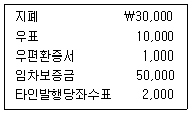
- ￦33,000
- ￦42,000
- ￦83,000
- ￦92,000
- ￦93,000
(정답률: 42%)
55. (주)한국은 20×1년 12월 말 결산 시 당좌예금잔액을 조회한 결과 은행으로부터 ￦13,500이라는 통보를 받았다. 은행과 회사측 장부금액과의 차이는 다음과 같다. 20×1년 12월 말 은행계정조정 전 (주)한국의 당좌예금 계정의 장부금액은?
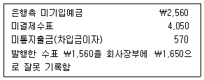
- ￦8,700
- ￦11,260
- ￦12,490
- ￦14,160
- ￦15,310
(정답률: 40%)
56. (주)한국의 전기 말 외상매출금과 대손충당금은 각각 ￦35,000과 ￦2,500이다. 당기 매출액은 ￦82,000(전액 외상)이며 외상매출금 회수액은 ￦89,000이다. (주)한국이 외상매출금 기말잔액의 10%를 대손충당금으로 설정할 경우, 당기의 대손 상각비는?
- ￦100
- ￦200
- ￦300
- ￦2,500
- ￦2,800
(정답률: 31%)
57. (주)한국은 20×1년 9월 1일에 건물에 대한 12개월분 보험료 ￦60,000을 지급하고 차변에 “보험료 60,000”으로 분개하였다. 20×1년 12월 31일에 필요한 수정분개는? (순서대로 차변, 대변)
- 선급보험료 20,000, 보험료 20,000
- 보험료 20,000, 선급보험료 20,000
- 선급보험료 40,000, 보험료 40,000
- 보험료 40,000, 선급보험료 40,000
- 선급보험료 60,000, 보험료 60,000
(정답률: 47%)
58. 다음 자료를 이용하여 계산한 매출총이익은?
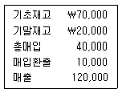
- ￦10,000
- ￦20,000
- ￦30,000
- ￦40,000
- ￦50,000
(정답률: 47%)
59. 다음 자료를 이용하여 계산한 기말재고자산은?
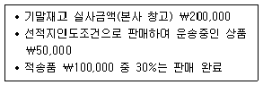
- ￦230,000
- ￦250,000
- ￦270,000
- ￦300,000
- ￦350,000
(정답률: 57%)
60. (주)한국은 재고자산을 실지재고조사법으로 기록하고 있으며, 잦은 도난사고가 발생하고 있다. 다음의 20×1년 1분기 자료를 이용하여 계산한 도난손실 추정액은?
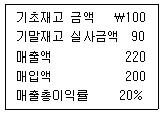
- ￦20
- ￦34
- ￦40
- ￦44
- ￦50
(정답률: 34%)
61. 다음 자료를 이용하여 계산한 재고자산평가손익은? (단, 재고자산감모손실은 없음)
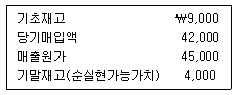
- 평가손실 ￦2,000
- 평가손실 ￦3,000
- 평가이익 ￦2,000
- 평가이익 ￦3,000
- ￦0
(정답률: 38%)
62. (주)한국은 사무실 일부를 임대하고 있으며, 20×1년 말과 20×2년 말 선수임대료 잔액은 각각￦10,000과 ￦7,000이다. 20×2년 포괄손익계산서상의 임대료가 ￦5,000일 때, 20×2년 현금으로 수취한 임대료는?
- ￦2,000
- ￦5,000
- ￦7,000
- ￦10,000
- ￦12,000
(정답률: 42%)
63. 다음 자료를 이용하여 계산한 매입으로 인한 현금 유출액은? (단, 매입은 외상으로 이루어짐)
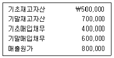
- ￦400,000
- ￦500,000
- ￦600,000
- ￦700,000
- ￦800,000
(정답률: 50%)
64. 다음 자료를 이용하여 계산한 매출로 인한 현금유입액은?
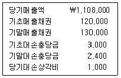
- ￦1,096,400
- ￦1,097,600
- ￦1,098,000
- ￦1,099,600
- ￦1,118,000
(정답률: 36%)
65. (주)한국은 공장건물을 신축하기 위하여 토지를 구입하고 토지 위에 있는 낡은 건물을 철거하였다. 토지의 취득원가는?
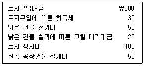
- ￦500
- ￦530
- ￦600
- ￦660
- ￦680
(정답률: 36%)
66. (주)한국은 20×1년 1월 1일에 업무용 차량을 구입하였다(취득원가 ￦21,000, 잔존가치 ￦1,000, 내용연수 5년, 정액법 상각). (주)한국은 동 차량을 20×2년 12월 31일 ￦11,000에 처분하였다. 처분시 유형자산처분손익은? (단, 원가모형을 적용함)
- ￦0
- 처분손실 ￦1,000
- 처분손실 ￦2,000
- 처분이익 ￦1,000
- 처분이익 ￦2,000
(정답률: 36%)
67. 20×1년 1월 1일 (주)한국은 액면금액 ￦1,000,000의 사채를 ￦918,000에 할인 발행하였다. 이 사채의 발행에 적용된 유효이자율은 7%, 액면이자율은 5%(이자지급: 매년 말 지급)이다. 이와 관련된 설명 중 옳지 않은 것은?
- 20×1년도 사채의 유효이자는 ￦64,260이다.
- 20×1년도 사채할인발행차금의 상각액은 ￦14,260이다.
- 20×1년도 말 사채의 장부금액은 ￦932,260이다.
- 20×2년 1월 1일 이 사채를 ￦935,000에 상환한다면 ￦2,740의 상환이익이 발생한다.
- 20×2년도 사채의 액면이자는 ￦50,000이다.
(정답률: 39%)
68. (주)한국은 20×1년 7월 1일에 은행으로부터 ￦5,000의 자금을 조달하면서 3개월 만기의 어음(액면이자율 연 12%, 이자는 만기 지급)을 발행하였다. 7월 1일 분개로 옳은 것은? (순서대로 차변, 대변)
- 현 금 5,000, 단기차입금 5,000
- 현 금 5,000, 지급어음 5,000
- 현 금 4,850, 단기차입금 4,850
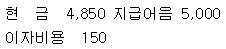
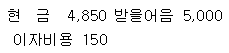
(정답률: 34%)
69. 다음 자료를 이용하여 계산한 건물처분으로 유입된 현금흐름은?
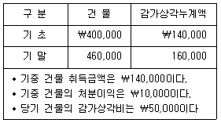
- ￦30,000
- ￦40,000
- ￦50,000
- ￦60,000
- ￦70,000
(정답률: 0%)
70. 다음 자료를 이용하여 계산한 당기의 비용총액은?
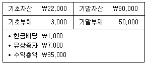
- ￦10,000
- ￦20,000
- ￦30,000
- ￦40,000
- ￦50,000
(정답률: 36%)
71. (주)한국은 20×1년 초에 업무용 차량운반구를 ￦10,000(내용연수 5년, 잔존가치 ￦0)에 취득하여 정액법으로 감가상각하여 오다가 20×2년부터 감가상각방법을 연수합계법으로 변경하였다. 이와 관련하여 20×2년도 말 재무상태표에 표시되는 동 차량운반구의 장부금액은? (단, 원가모형을 적용함)
- ￦2,000
- ￦3,200
- ￦4,000
- ￦4,800
- ￦6,000
(정답률: 25%)
72. 다음 자료를 이용하여 계산한 유동비율과 부채비율(=부채/자본)은? (순서대로 유동비율, 부채비율)
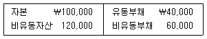
- 50%, 100%
- 50%, 200%
- 100%, 100%
- 150%, 200%
- 200%, 100%
(정답률: 16%)
73. 보조부문원가 배부방법에 관한 설명으로 옳지 않은 것은?
- 직접배부법은 보조부문 상호간의 용역수수관계를 전혀 고려하지 않는 방법이다.
- 단계배부법은 보조부문원가의 배부순서를 정하여 그 순서에 따라 단계적으로 보조부문원가를 다른 보조부문과 제조부문에 배부하는 방법이다.
- 단계배부법은 보조부문 상호간의 용역수수관계를 일부 고려하는 방법이다.
- 상호배부법은 보조부문 상호간의 용역수수관계가 중요하지 않을 때 적용하는 것이 타당하다.
- 상호배부법은 보조부문 상호간의 용역수수관계를 모두 고려하여 보조부문원가를 다른 보조부문과 제조 부문에 배부하는 방법이다.
(정답률: 42%)
74. 20×1년 원재료가 600kg 사용될 것으로 예상된다. 기초 원재료가 50kg이고, 기말 원재료를 80kg 보유하고자 한다면 20×1년에 구입해야 할 원재료의 수량은?
- 570 kg
- 630 kg
- 650 kg
- 680 kg
- 730 kg
(정답률: 24%)
75. 다음은 (주)한국의 20×1년 8월 재고자산에 관한자료이다. (주)한국의 20×1년 8월 중 직접재료 매입액은 ￦25,000이고, 매출원가는 ￦68,000이다. (주)한국의 20×1년 8월의 가공원가는?
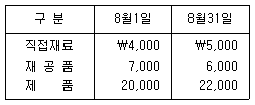
- ￦45,000
- ￦48,000
- ￦50,000
- ￦53,000
- ￦55,000
(정답률: 28%)
76. 다음은 종합원가계산제도를 채택하고 있는 (주)한국의 20×1년 생산관련 자료이다. 직접재료는 공정 초에 모두 투입되고, 가공원가는 공정전반에 걸쳐 균등하게 발생한다. 기초재공품 및 기말재공품의 완성도는 각각 70% 및 40%이다. 공손은 공정 말에 발견된다. (주)한국이 원가흐름 가정으로 평균법을 적용할 경우, 20×1년 가공원가의 완성품환산량은?
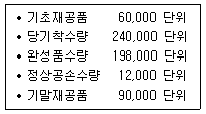
- 240,000 단위
- 242,000 단위
- 244,000 단위
- 246,000 단위
- 250,000 단위
(정답률: 20%)
77. (주)한국은 20×1년 2,000단위의 제품을 생산하여 1,500단위의 제품을 판매하였다. 기초재고는 없었으며 관련 원가자료는 다음과 같다. 변동원가계산에 의한 제품단위당 제조원가는?
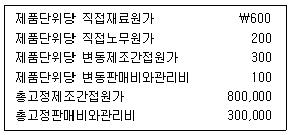
- ￦800
- ￦900
- ￦1,000
- ￦1,100
- ￦1,500
(정답률: 30%)
78. 최근 2년간 총고정제조원가와 단위당 변동제조원가는 변화가 없으며 생산량과 총제조원가는 다음과 같다. 20×3년도에 총고정제조원가가 10% 증가할 경우, 생산량이 400 단위일 때 총제조원가는?
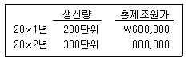
- ￦1,000,000
- ￦1,020,000
- ￦1,040,000
- ￦1,060,000
- ￦1,080,000
(정답률: 10%)
79. 다음 자료를 이용할 경우 목표영업이익 ￦20,000을 달성하기 위한 판매량은?
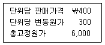
- 60 단위
- 200 단위
- 260 단위
- 300 단위
- 340 단위
(정답률: 29%)
80. 20×1년 예산공헌이익계산서는 다음과 같다. 연간 최대생산능력은 1,000 단위이다. 그런데 신규고객이 20×1년 초에 단위당 ￦30에 500단위를 구입하겠다고 제의하였다. 이 제의를 수락할 경우, 20×1년 예산상 영업이익에 미치는 영향은?
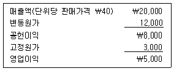
- 영향 없음
- ￦3,000 증가
- ￦5,000 증가
- ￦8,000 증가
- ￦10,000 증가
(정답률: 9%)
3과목: 공동주택시설개론
81. 건축물에 작용하는 하중에 관한 설명으로 옳은 것은?
- 지진하중은 건축물이 무거울수록 크다.
- 적설하중은 지붕의 물매가 클수록 크다.
- 풍하중은 바람을 받는 벽면의 면적이 작을수록 크다.
- 고정하중은 건축물의 사용에 의해서 발생하는 하중으로 반영구적 하중을 포함한다.
- 활하중은 사용기간 동안 위치가 고정되어 있고 크기가 변하지 않는 하중을 포함한다.
(정답률: 60%)
82. 건축물 부재에 관한 설명으로 옳지 않은 것은?
- 보는 슬래브 등을 지지하는 수평부재로 큰보, 작은보가 있다.
- 벽은 공간을 구획하는 수직부재로 장막벽, 내력벽 등이 있다.
- 기둥은 높이가 단면 치수의 3배 이상인 수직부재로 주로 인장력에 저항한다.
- 기초는 상부구조의 하중을 지반에 전달하는 부재로 기초판과 지정을 포함한다.
- 슬래브는 수평부재로 장변과 단변의 비에 따라 1방향 슬래브, 2방향 슬래브가 있다.
(정답률: 65%)
83. 기존 건축물에 기초를 보강하거나 새로운 기초를 삽입하는 공법은?
- 심초 공법
- 탑다운 공법
- 베노토 공법
- 언더피닝 공법
- 어스 드릴 공법
(정답률: 40%)
84. 지반조사 방법에 관한 설명으로 옳지 않은 것은?
- 짚어보기는 인력으로 철봉 등을 지중에 꽂아 지반의 단단함을 조사하는 방법이다.
- 베인테스트는 ＋자 날개형 테스터의 회전력으로 점토 지반의 점착력을 조사하는 방법이다.
- 평판재하시험은 시험추를 떨어뜨려서 타격횟수 N값을 측정하여 지반을 조사하는 방법이다.
- 물리적 지하탐사법은 전기저항, 탄성파, 강제진동 등을 통하여 지반을 조사하는 방법이다.
- 보링은 지중 천공을 통해 토사를 채취하여 지반의 깊이에 따른 지층의 구성 상태 등을 조사하는 방법이다.
(정답률: 67%)
85. 석재 공사에 관한 설명으로 옳지 않은 것은?
- 석재는 밀도가 클수록 대부분 압축강도가 크다.
- 화강암과 대리석은 산성에 강하며 주로 외장용으로 사용된다.
- 외벽 습식공법은 석재와 구조체를 모르타르로 일체화 시키는 공법이다.
- 석재선부착 PC공법은 콘크리트 공사와 병행 시공을 통한 공기단축이 가능한 공법이다.
- 외벽 건식공법은 연결용 철물 등을 사용하므로 동절기 공사가 가능한 공법이다.
(정답률: 73%)
86. 조적조 벽체의 시공방법에 관한 설명으로 옳지 않은 것은? (문제 오류로 실제 시험에서는 2, 3번이 정답처리 되었습니다. 여기서는 2번을 누르면 정답 처리 됩니다.)
- 시멘트 벽돌은 쌓기 직전에 물을 축이지 않는다.
- 벽돌벽의 각부는 가급적 동일한 높이로 쌓아 올라가야 한다.
- 통줄눈을 피하는 주된 이유는 방수상의 결함을 방지하기 위함이다.
- 백화현상 방지를 위해 줄눈 모르타르에는 방수제를 넣는 것이 좋다.
- 벽돌벽의 하루 쌓기 높이는 1.2m를 표준으로 하고, 최대 1.5m 이내로 한다.
(정답률: 10%)
87. 철골구조와 관련된 용어의 설명으로 옳지 않은 것은?
- 고력볼트접합은 볼트의 인장력만으로 힘을 전달하는 접합방법이다.
- 스티프너는 판보에서 웨브의 좌굴을 방지하기 위해 사용된다.
- 트러스는 가늘고 긴 부재를 삼각형 단위로 구성한 구조형식이다.
- 베이스 플레이트는 기둥으로부터 전달되는 힘을 기초에 전달하는 역할을 한다.
- 데크 플레이트는 강판에 적당한 간격으로 골 등을 낸 것으로 슬래브에 사용된다.
(정답률: 36%)
88. 용접결함에 관한 설명으로 옳지 않은 것은?
- 크레이터(crater)는 아크용접을 할 때 비드(bead) 끝에 오목하게 패인 결함이다.
- 공기구멍(blow hole)은 용융금속이 응고할 때 방출가스가 남아서 생기는 결함이다.
- 오버랩(over lap)은 용접금속과 모재가 융합되지 않고 겹쳐지는 결함이다.
- 언더컷(under cut)은 모재가 녹아 용착금속이 채워지지 않고 홈으로 남는 결함이다.
- 슬래그(slag) 함입은 기공에 의해 용접부 표면에 작은 구멍이 생기는 결함이다.
(정답률: 46%)
89. 철골구조에 관한 설명으로 옳지 않은 것은?
- 철근콘크리트 구조에 비해 공사기간이 상대적으로 짧다.
- 내화성능이 비교적 낮아 내화피복에 대하여 고려해야 한다.
- 강재는 재질이 균등하며, 철근콘크리트에 비해 인성이 우수하다.
- 철근콘크리트 구조에 비해 공사시 기후의 영향을 크게 받지 않는다.
- 단면에 비하여 부재 길이가 비교적 길고 두께가 얇아 좌굴 저항성이 우수하다.
(정답률: 70%)
90. 콘크리트 공사에 관한 설명으로 옳지 않은 것은?
- 물시멘트비가 클수록 압축강도는 작아진다.
- 물시멘트비가 클수록 레이턴스가 많이 생긴다.
- 운반 및 타설 시에 콘크리트에 물을 첨가하면 안된다.
- 단위수량이 많을수록 작업이 용이하고, 블리딩은 작아진다.
- 콘크리트의 비빔시간이 너무 길면 워커빌리티는 나빠진다.
(정답률: 70%)
91. 철근 공사에 관한 설명으로 옳지 않은 것은?
- 작은보의 주근은 큰보에 정착한다.
- 사각형 띠철근으로 둘러싸인 기둥의 주근은 4개 이상으로 한다.
- 스페이서는 철근의 피복두께를 유지하기 위해 사용된다.
- 경간이 연속인 보의 하부근은 중앙부에서, 상부근은 단부에서 잇는다.
- 배력근은 하중을 분산시키거나 균열을 제어할 목적으로 사용된다.
(정답률: 62%)
92. 콘크리트의 크리프(creep)에 관한 설명으로 옳지 않은 것은?
- 재하응력이 클수록 크리프는 증가한다.
- 물시멘트비가 클수록 크리프는 증가한다.
- 재하시기가 빠를수록 크리프는 증가한다.
- 부재의 단면이 작을수록 크리프는 증가한다.
- 온도가 낮고 습도가 높을수록 크리프는 증가한다.
(정답률: 50%)
93. 창호에 관한 설명으로 옳은 것은?
- 플러시문은 울거미를 짜고 합판 등으로 양면을 덮은문이다.
- 무테문은 방충 및 환기를 목적으로 울거미에 망사를 설치한 문이다.
- 홀딩도어는 일광과 시선을 차단하고 통풍을 목적으로 설치하는 문이다.
- 루버는 문을 닫았을 때 창살처럼 되고 도난방지를 위해 사용하는 문이다.
- 주름문은 울거미 없이 강화 판유리 등을 접착제나 볼트로 설치한 문이다.
(정답률: 73%)
94. 지붕구조의 물매에 관한 설명으로 옳지 않은 것은?
- 지붕면적이 클수록 물매는 크게 한다.
- 지붕재료의 크기가 작을수록 물매는 크게 한다.
- 강우량과 적설량이 많은 지방에서는 물매를 크게 한다.
- 수평거리와 수직거리가 같은 물매를 된물매라고 한다.
- 물매는 직각삼각형에서 수평거리 10에 대한 수직높이의 비로 표시할 수 있다.
(정답률: 47%)
95. 방수공사에 관한 설명으로 옳지 않은 것은?
- 보행용 시트방수는 상부 보호층이 필요하다.
- 벤토나이트방수는 지하외벽방수 등에 사용된다.
- 아스팔트방수는 결함부 발견이 어렵고, 작업시 악취가 발생한다.
- 시멘트액체방수는 모재 콘크리트의 균열 발생시에도 방수성능이 우수하다.
- 도막방수는 도료상의 방수재를 바탕면에 여러 번 칠해 방수막을 만드는 공법이다.
(정답률: 70%)
96. 공동주택의 소음 방지 공사에 관한 설명으로 옳지 않은 것은?
- 흡음성능이 우수한 재료는 대부분 차음성능도 우수하다.
- 이중벽을 설치하거나 건물의 기밀성을 높이면 차음성능은 향상된다.
- 공기전송음, 고체전송음 등을 감소 또는 차단시키기위한 공사이다.
- 천장이나 바닥, 벽에 사용되는 재료의 면밀도가 클수록 차음성능은 향상된다.
- 칸막이벽을 상층 바닥까지 높이고 방음재로 벽면을시공하면, 내부 발생음에 대한 차단성능이 향상된다.
(정답률: 58%)
97. 미장공사에 관한 설명으로 옳지 않은 것은?
- 고름질은 요철이 심할 때 초벌바름 위에 발라 붙여주는 작업이다.
- 마감두께는 손질바름을 포함한 바름층 전체의 바름두께를 말한다.
- 미장두께는 각 미장층별 발라 붙인 면적의 평균 바름두께를 말한다.
- 라스 먹임은 메탈 라스, 와이어 라스 등의 바탕에 모르타르 등을 최초로 발라 붙이는 것이다.
- 덧먹임은 바르기 접합부 또는 균열 틈새 등에 반죽된 재료를 밀어 넣어 때워 주는 것이다.
(정답률: 62%)
98. 벽체의 타일공사에 관한 설명으로 옳지 않은 것은?
- 하절기에 외장타일을 붙일 경우 하루 전에 바탕면에 물을 충분히 적셔둔다.
- 치장줄눈은 타일을 붙인 후 바로 줄눈파기를 실시하고, 줄눈부분을 청소한다.
- 타일의 치장줄눈은 세로줄눈을 먼저 시공하고, 가로줄눈은 위에서 아래로 마무리한다.
- 창문선, 문선 등 개구부 둘레와 설비 기구류와의 마무리 줄눈 너비는 10mm 정도로 한다.
- 타일은 충분한 뒷굽이 붙어 있는 것을 사용하고, 뒷면은 유약이 묻지 않고 거친 것을 사용한다.
(정답률: 40%)
99. 건설공사 표준품셈의 적용기준에 관한 설명으로 옳은 것은?
- 시멘트 벽돌의 할증은 3%로 한다.
- 철근콘크리트의 단위중량은 2,300kg/m3이다.
- 수량의 계산은 지정소수위 이하 1위까지 구하고 끝수는 버린다.
- 콘크리트 체적 계산시 콘크리트에 배근된 철근의 체적은 제외한다.
- 재료 및 자재단가에 운반비가 포함되어 있지 않은 경우 구입 장소로부터 현장까지의 운반비를 계상할 수 있다.
(정답률: 58%)
100. 옥상 평슬래브(가로 18m, 세로 10m)에 8층(3겹)아스팔트 방수시 방수면적은? (단, 4면의 수직 파라펫(parapet)의 방수 높이는 30cm로 한다.)
- 180.0m2
- 188.4m2
- 196.8m2
- 200.0m2
- 209.2m2
(정답률: 50%)
101. 건축물의 에너지 절약을 위한 방법으로 옳지 않은 것은?
- 건축물의 연면적에 대한 외피면적의 비를 크게 한다.
- 지하주차장의 환기용 팬은 일산화탄소 농도에 따라 자동제어한다.
- 난방 순환수 펌프는 대수제어 또는 가변속제어방식을 채택한다.
- 송풍기에서 회전수제어가 댐퍼제어에 비해 동력절감에 유리하다.
- 거실 층고와 반자 높이는 실의 용도와 기능에 지장을 주지 않는 범위 내에서 가능한 낮게 한다.
(정답률: 47%)
102. 물이 흐르고 있는 원형 배관에서 관지름이 1/2로 감소된다면, 이 때 배관의 물의 속도는 몇 배로 증가하는가? (단, 배관 속의 물은 비압축성, 정상류로 가정한다.)
- 2배
- 4배
- 8배
- 16배
- 32배
(정답률: 75%)
103. 급탕설비 시스템의 구성요소에 속하지 않는 것은?
- 팽창탱크
- 공기빼기밸브
- 순환펌프
- 저탕조
- 진공방지기
(정답률: 47%)
104. 급수방식 중 고가탱크 방식에 관한 설명으로 옳지 않은 것은?
- 단수시에도 일정량의 급수가 가능하다.
- 수도 본관 압력에 따라 수도꼭지의 토출압력이 변동 한다.
- 펌프직송 방식에 비하여 수질오염의 가능성이 크다.
- 고가탱크 수위면과 사용기구의 낙차가 클수록 토출 압력이 증가한다.
- 고가탱크의 설치높이는 최상층 사용기구의 최소필요압력과 배관 마찰손실 등을 고려하여 결정한다.
(정답률: 50%)
1⑤. 배관 내 신축이음에 속하지 않는 것은?
- 슬리브 이음
- 벨로스 이음
- 스위블 조인트
- 플랜지 이음
- 볼 조인트
(정답률: 50%)
106. 통기관의 설치목적으로 옳은 것을 <보기>에서 모두 고른 것은?
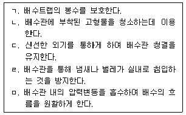
- ㄱ, ㄴ, ㄹ
- ㄴ, ㄷ, ㅁ
- ㄱ, ㄷ, ㅁ
- ㄱ, ㄴ, ㄷ, ㄹ
- ㄱ, ㄷ, ㄹ, ㅁ
(정답률: 54%)
107. 서징(surging)현상에 관한 설명으로 옳은 것은?
- 증기가 배관 내에서 응축되어 배관의 곡관부 등에 부딪히면서 소음과 진동을 유발시키는 현상이다.
- 만수 상태로 흐르는 관의 통로를 갑자기 막을 때, 수압의 상승으로 압력파가 관내를 왕복하는 현상이다.
- 산형(山形)특성의 양정곡선을 갖는 펌프의 산형 왼쪽부분에서 유량과 양정이 주기적으로 변동하는 현상이다.
- 물의 압력이 그 물의 온도에 해당하는 포화증기압보다 낮아질 경우 물이 증발하여 기포가 발생하는 현상이다.
- 배수수직관 상부로부터 많은 물이 낙하할 경우 순간적으로 진공이 발생하여 트랩 내 물을 흡입하는 현상이다.
(정답률: 50%)
108. 밸브에 관한 설명으로 옳지 않은 것은?
- 체크 밸브는 유체 흐름의 역류방지를 목적으로 설치한다.
- 글로브 밸브는 유체저항이 비교적 작으며, 슬루스 밸브라고도 불린다.
- 버터플라이 밸브는 밸브 몸통 내 중심측에 원판 형태의 디스크를 설치한 것이다.
- 볼 밸브는 핸들 조작에 따라 볼에 있는 구멍의 방향이 바뀌면서 개폐가 이루어진다.
- 게이트 밸브는 디스크가 배관의 횡단면과 평행하게 상하로 이동하면서 개폐가 이루어진다.
(정답률: 72%)
109. 수질 오염의 지표로서, 물속에 용존하고 있는 산소를 의미하는 것은?
- DO
- SS
- BOD
- COD
- SOD
(정답률: 42%)
110. 건축물의 에너지절약 설계기준에 따른 기밀 및 결로방지에 관한 설명으로 옳지 않은 것은?
- 단열재의 이음부는 최대한 밀착하여 시공하거나 2장을 엇갈리게 시공한다.
- 벽체 내부의 결로를 방지하기 위하여 단열재의 실외측에 방습층을 설치한다.
- 건축물 외피 단열부위의 접합부, 틈 등은 밀폐될 수있도록 코킹과 가스켓 등을 사용하여 기밀하게 처리한다.
- 단열부위가 만나는 모서리 부위는 알루미늄박 또는 플라스틱계 필름 등을 사용할 경우에는 150mm 이상 중첩되게 시공한다.
- 알루미늄박 또는 플라스틱계 필름 등을 사용하는 방습층의 이음부는 100mm 이상 중첩하고 내습성 테이프 등으로 기밀하게 마감한다.
(정답률: 65%)
111. 가스설비에 관한 설명으로 옳지 않은 것은?
- 중압은 0.1kPa 이상 1kPa 미만의 압력을 말한다.
- 호칭지름이 13mm 미만의 배관은 1m 마다, 13mm이상 33mm 미만의 배관은 2m 마다 고정장치를 설치한다.
- 가스계량기와 전기점멸기와의 이격 거리는 30㎝ 이상을 유지한다.
- 입상관의 밸브는 보호 상자에 설치하지 않는 경우 바닥으로부터 1.6m 이상 2 m 이내에 설치한다.
- 배관은 도시가스를 안전하게 사용할 수 있도록 하기위하여 내압성능과 기밀성능을 가지도록 한다.
(정답률: 39%)
112. 옥내소화전설비에 관한 설명으로 옳지 않은 것은?
- 옥내소화전함의 문짝 면적은 0.5m2 이상으로 한다.
- 옥내소화전 노즐선단에서의 방수압력은 0.1MPa 이상으로 한다.
- 옥내소화전 방수구 높이는 바닥으로부터 1.5m 이하가 되도록 한다.
- 소방대상물 각 부분으로부터 하나의 방수구까지의 수평거리는 25m 이하로 한다.
- 소화전내에 설치하는 호스의 구경은 40mm(호스릴옥내소화전설비의 경우에는 25mm) 이상으로 한다.
(정답률: 59%)
113. 보일러에 관한 설명으로 옳지 않은 것은?
- 증기보일러의 용량은 단위시간당 증발량으로 나타낸다.
- 관류보일러는 드럼이 설치되어 있어 부하변동에 대한 응답이 느리다.
- 노통연관보일러는 부하 변동에 대해 안정성이 있고, 수면이 넓어 급수조절이 용이하다.
- 난방ㆍ급탕 겸용 보일러의 정격출력은 급탕부하, 난방부하, 배관부하, 예열부하의 합으로 표시된다.
- 수관보일러는 고압 및 대용량에 적합하여 지역난방과 같은 대규모 설비나 대규모 공장 등에서 사용된다.
(정답률: 54%)
114. 면적이 100m2인 사무실의 평균 조도를 200럭스(lx)로 유지하고자 한다. 형광등을 사용할 경우 최소 설치개수는? (단, 형광등 한 개의 광속은 2,000루멘(lm), 조명률은 50%, 감광보상률은 1.5로 한다.)
- 8개
- 10개
- 14개
- 20개
- 30개
(정답률: 40%)
115. 엘리베이터의 구성 기기에 속하지 않는 것은?
- 완충기
- 조속기
- 엘리미네이터
- 균형추
- 전자 브레이크
(정답률: 65%)
116. 난방부하의 산정에 관한 설명으로 옳지 않은 것은?
- 외기부하는 현열과 잠열을 고려하여 산정한다.
- 외벽 및 창문의 열관류율이 클수록 손실열량이 증가한다.
- 지하층의 손실열량은 실내온도와 지중온도를 고려하여 산정한다.
- 외벽의 손실열량을 산정하는 경우 상당외기온도를 적용해야 한다.
- 틈새바람에 의한 손실열량을 고려하여 산정한다.
(정답률: 알수없음)
117. 단일덕트 변풍량방식에 관한 설명으로 옳지 않은 것은?
- 정풍량방식에 비하여 설비비가 적게 든다.
- 부분부하시 송풍기의 풍량을 제어하여 반송동력을 절감할 수 있다.
- 부하가 감소되면 송풍량이 적어지므로 환기가 불충분해질 염려가 있다.
- 변풍량 유닛을 배치하면 각 실이나 존(zone)의 개별제어가 쉽다.
- 전폐형 변풍량 유닛을 사용하면 비사용실에 대한 공조를 정지하여 에너지를 절감할 수 있다.
(정답률: 60%)
118. 압축식 냉동기의 성적계수에 관한 설명으로 옳지 않은 것은?
- 성적계수가 높을수록 냉동기 성능이 우수하다.
- 히트펌프의 성적계수는 냉방시보다 난방시가 높다.
- 증발기의 냉각열량을 압축기의 투입에너지로 나눈 값이다.
- 증발압력이 낮을수록, 응축압력이 높을수록 성적계수는 높아진다.
- 냉매의 압력과 엔탈피의 관계를 나타낸 몰리에르 선도를 이용하여 산정할 수 있다.
(정답률: 42%)
119. 지능형 홈네트워크 설비 설치 및 기술기준에 관한 설명으로 옳지 않은 것은?
- 원격제어가 가능한 조명제어기를 세대안에 1구 이상설치하여야 한다.
- 무인택배함의 설치수량은 소형주택의 경우 세대수의 약 10∼15%를 권장한다.
- 단지서버실은 집중구내통신실과 방재실을 동일 건물에 통합 설치하기 위한 공간을 말한다.
- 집중구내통신실은 국선·국선단자함 또는 국선배선반과 초고속통신망장비 등 각종 구내통신용 설비를 설치하기 위한 공간을 말한다.
- 단지네트워크장비는 세대내 홈게이트웨이(단, 월패드가 홈게이트웨이 기능을 포함하는 경우는 월패드로 대체가능)와 단지서버간의 통신 및 보안을 수행하는 장비이다.
(정답률: 50%)
120. 지능형 홈네트워크 설비 중 주동출입시스템에 관한 설명으로 옳지 않은 것은?
- 자동문의 경우 프레임 내부에 접지단자를 설치하여야 한다.
- 주동출입시스템과 세대의 월패드 사이에는 통신이 가능하도록 해야 한다.
- 지상의 주동 현관과 지하주차장과 주동을 연결하는 출입구에 설치하여야 한다.
- 화재발생 등 비상시 소방시스템과 연동되어 주동 현관이나 지하주차장의 자동문의 잠김상태가 자동으로 풀려야 한다.
- 노출형으로 설치하고 주동설계시 강우를 고려하여 설계하거나 강우에 대비한 차단설비(날개벽, 차양등)를 설치하여야 한다.
(정답률: 31%)